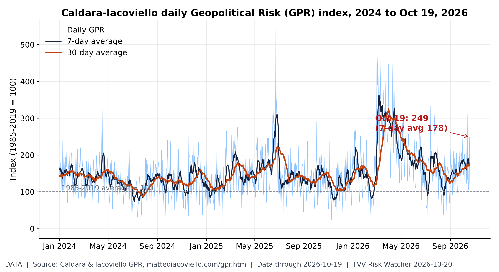
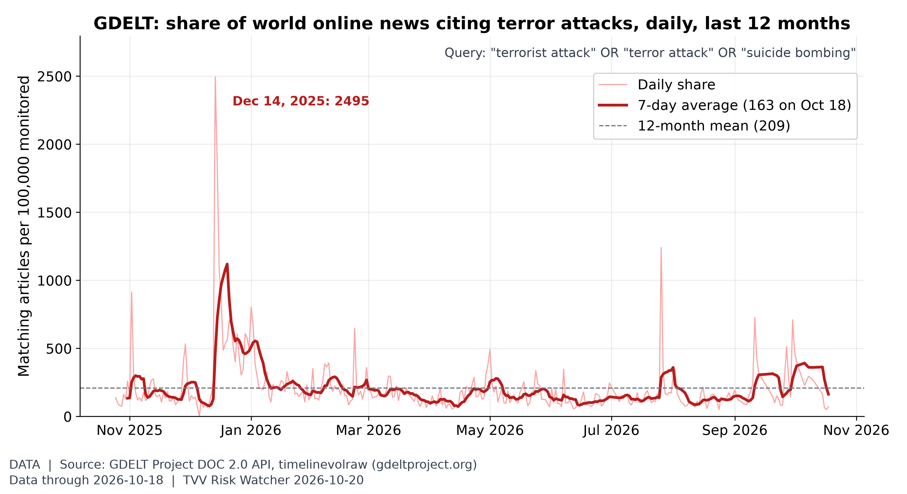
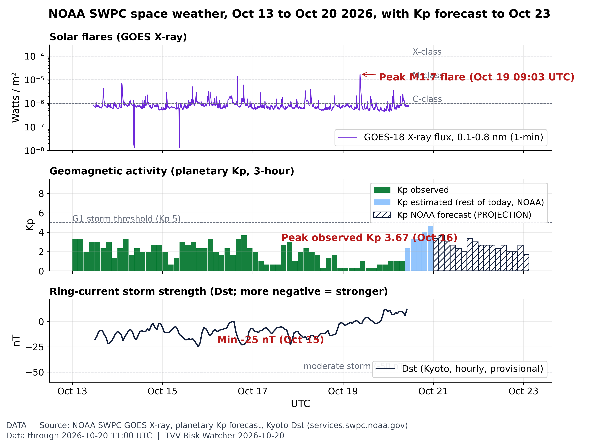
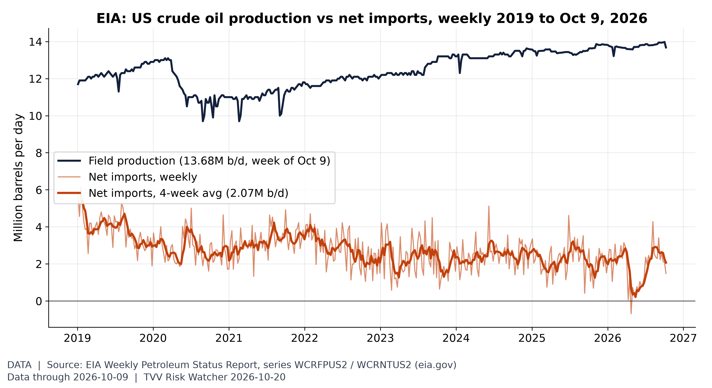
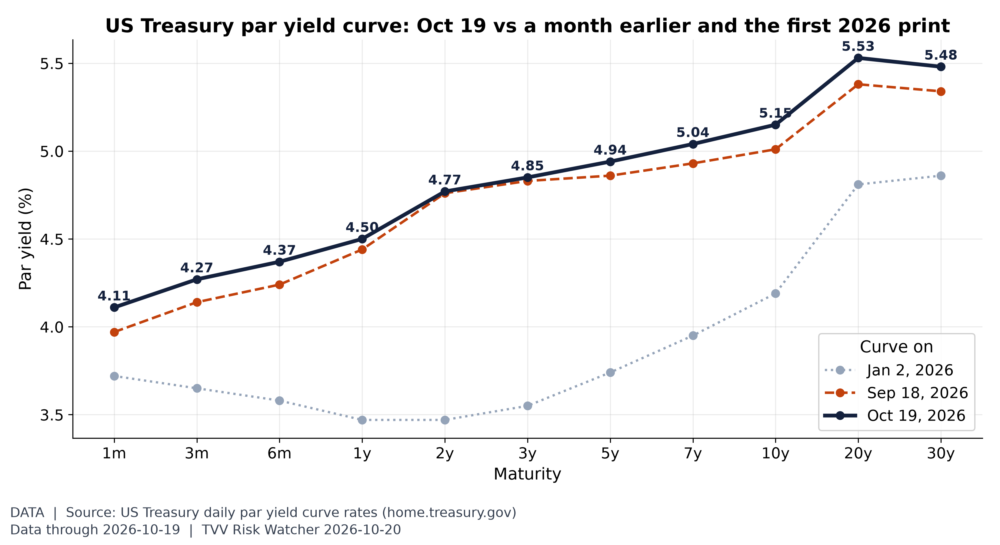
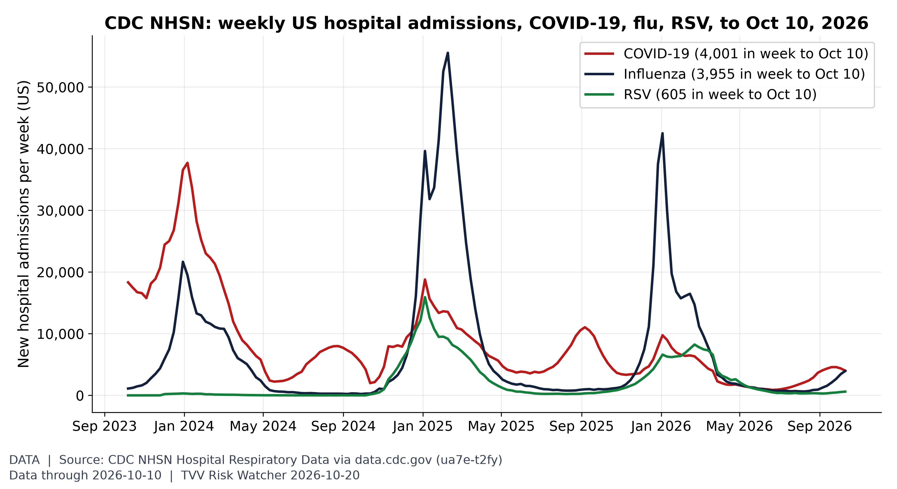
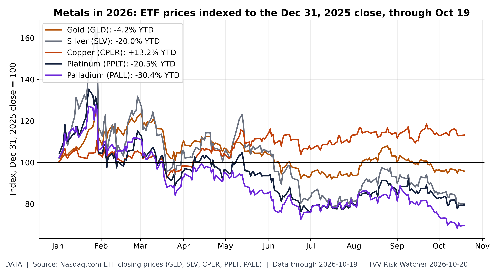
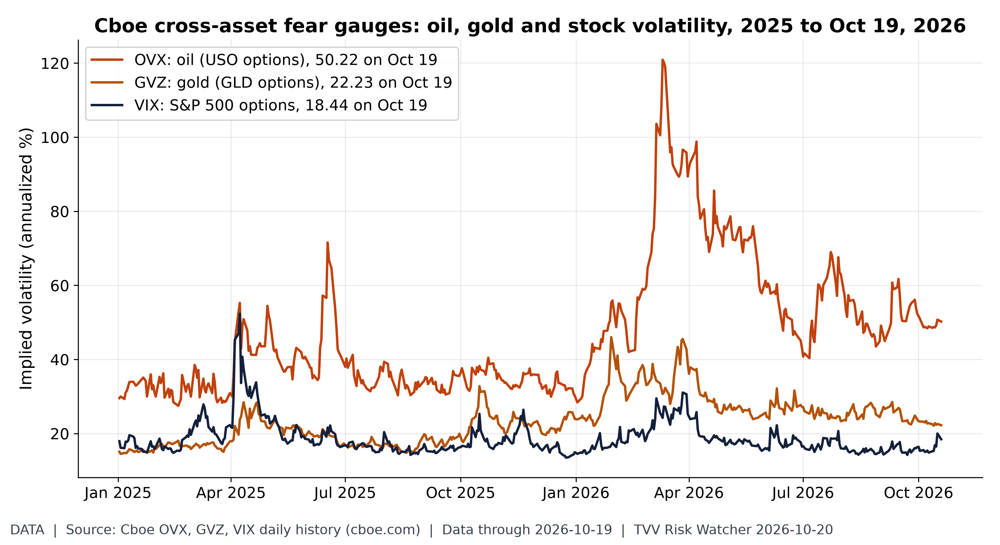
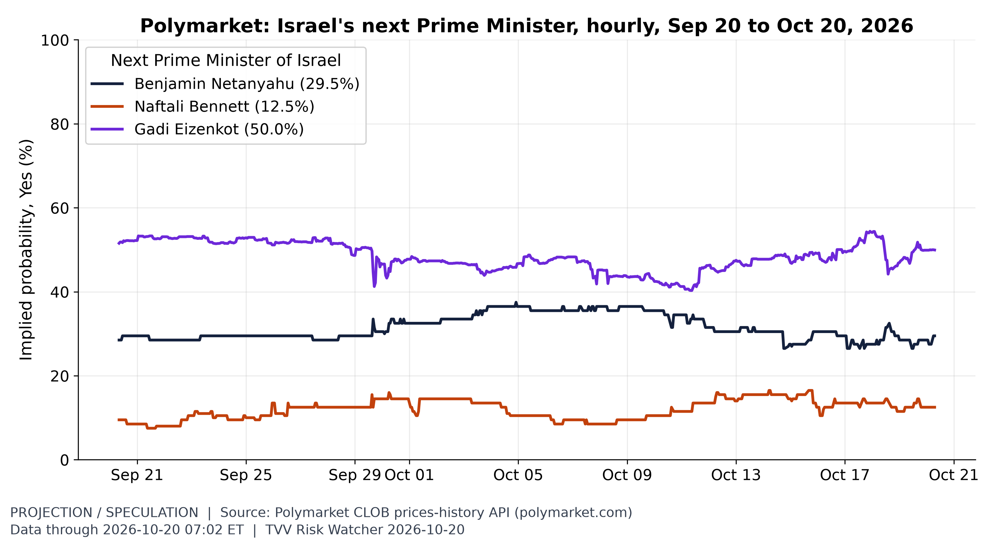
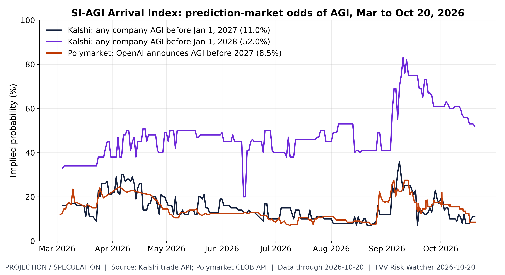

TVV RESEARCH SLATE — October 20, 2026 — 11 desks
1. Major Geopolitical Conflict Developments

Daily Geopolitical Risk index. Daily GPR read 249 on Oct 19 (7-day average 178, 30-day 176) against a 1985-2019 norm of 100; the 2026 daily high so far is 501 on Mar 2. Source: matteoiacoviello.com data page
- ★ Hormuz southern corridor: UANI's Oct 19 update says more ships now cross the southern corridor both ways with AIS off, many escorted by US forces; US-facilitated transits hit 505 in October's first 17 days (29.71 a day). No new JMIC note since Oct 18 (Update 106: SEVERE). UANI Oct 19 shipping update · JMIC Update 106 PDF
- Blockade: US forces had redirected 138 ships, disabled four, boarded two and destroyed 10 IRGC-linked tankers as of Oct 17, UANI said Oct 19; JMIC has logged 1,068 Hormuz transits since the US-Iran MoU was signed and 1,681 since the war began. UANI Oct 19 shipping update
- Hormuz flows: Kpler said attacks cut Gulf crude flows to a seven-day average of about 8.5 million bpd last week from more than 20 million bpd the week before, Reuters reported Oct 19; Signal Ocean still saw about 13.9 million bpd of crude moving through Hormuz. Reuters via The Star · Splash247 Hormuz attacks
- ★ Ukraine's Air Force said Russia launched 165 drones, 105 of them jet-powered, from 18:00 Oct 19; 115 were downed by 08:00 Oct 20 with hits at 30 locations, and drone strikes killed at least seven in Kyiv and its region. Ukrainska Pravda Air Force · Hromadske Kyiv toll
- ★ Oslo talks Oct 20: Zelensky meets US envoy Witkoff with Norway's Støre and Finland's Stubb, Kushner joining remotely, before Witkoff heads to Moscow; Zelensky offered to pause strikes on Russian oil sites for more Patriot interceptors. Euronews Oslo talks · Norway government notice
- ★ Yemen: a Houthi missile strike on a government training camp in Shabwa on Oct 19 killed 58 and injured more than 200, Reuters said, as the Houthis claimed six attacks on Saudi targets including Aramco at Yanbu and the Shaybah oilfield. Reuters via CNBC · Xinhua Houthi claims
- Egypt's parliament postponed until Oct 26 its vote on authorising military support for Saudi Arabia, Xinhua said, while the Houthis said their six strikes answered more than 200 Saudi air and missile strikes in 48 hours. Xinhua Houthi claims · Anadolu Houthi claims
- Lavrov in Tehran Oct 19 called for restoring Hormuz traffic and a Gulf security framework; Araghchi favors Iran's seven-day plan, reopening the strait on day six if the US lifts its blockade and oil sanctions Iran International Lavrov visit
- Israel votes Oct 27: Channel 13 polling published Oct 19 gave Eisenkot's bloc 51 seats to 50 for Netanyahu's, and Channel 12 gave 55 to 51, with neither side at 61 without the Arab parties. Haaretz Oct 19 polls
- Trump wrote that the US will soon finish the job against Iran unless it changes course; Araghchi replied that Iran has unfinished jobs too, while the IRGC said US naval forces had pulled back about 700 km. Iran International Lavrov visit
- Russia waiver: Trump's executive order waiving some Russia sanctions and tariffs follows a diesel deal starting at about 2.3 million barrels this month and rising to about 7.6 million barrels a month, Reuters reported Oct 19. Reuters via The Star · Reuters via CNBC
2. Major Terror / Security Incidents
- ★ Mali: gunmen on motorbikes killed at least 48 civilians in Daoussahak camps at Tagadayat, about 50 km from Ménaka, on Oct 18, and community leaders blamed Islamic State, AFP reported Oct 19; local officials put the toll above 50. La Croix / AFP Ménaka attack
- Australia: independent MP Helen Haines, 65, was rammed twice by a car outside her Wangaratta office on Oct 19 and is critical; the Victoria Joint Counter Terrorism Team supports the probe and a 43-year-old man is in custody. BBC Haines attack · AFP Commissioner statement
- Germany summoned Iran's ambassador on Oct 19 over attempted attacks targeting Josef Schuster of the Central Council of Jews and Volker Beck of the German-Israeli Society, saying they would have legal consequences. Iran International Lavrov visit
- Pakistan: Major Wajahat Waheed, 34, was killed by an IED leading a clearance operation in Pasni, Gwadar, ISPR said Oct 19, as forces reported killing four militants in Kalat's Jattakabad on Oct 18. Dawn ISPR Balochistan

Terror in the news. Worldwide news coverage of terror attacks ran at 163 articles per 100,000 monitored (7-day average to Oct 18) vs a 12-month mean of 209; the period's peak was Dec 14, 2025 (2495). Media attention, not attack counts. [Data; data as of 2026-10-18 (held: GDELT API returned HTTP 429 at ~7:05 AM ET Oct 20; Oct 19 pull kept)] Source: api.gdeltproject.org data page
3. Earthquakes and Eruptions
- ★ USGS lists no new damaging quake since Oct 9; an M6.3 struck 197 km NW of Port-Olry, Vanuatu, at 0420 UTC Oct 20, after an M6.0 and two M5.7 shocks in the same zone on Oct 19, drawing a green PAGER alert. USGS Vanuatu M6.3 · USGS M4.5+ week feed
- Indonesia's Mount Ibu erupted again on the night of Oct 19, sending ash 400 m above the crater; it stays at Alert Level II with 101 eruption quakes logged that day, MAGMA Indonesia data show. Databoks Ibu Oct 19
4. Solar / Space Weather
- ★ SWPC: the G1 storm forecast for Oct 19 did not arrive (Kp peaked at 1.00, Ap 3); its 0030 UTC Oct 20 forecast now puts G1 likely late Oct 20, Kp 4.67 at 21-00 UTC, from a coronal-hole stream, with active levels Oct 21. SWPC 3-day forecast · SWPC daily indices
- Region 4551 fired an M1.6 flare peaking at 0903 UTC Oct 19 with a 430 sfu radio burst and R1 blackout; SWPC puts R1-R2 odds at 25% a day through Oct 22. SWPC forecast discussion · SWPC 3-day forecast
- SWPC said no Earth-directed CMEs were seen and a CME first seen at 2315 UTC Oct 18 off the southwest limb is not expected to reach Earth; S1 radiation-storm odds stay at 5%. SWPC forecast discussion

Space weather this week: flares, Kp, Dst. The G1 forecast for Oct 19 did not verify (max Kp 1.00); observed Kp is 1.00 so far Oct 20 (to 09:00 UTC) and Dst 12 nT. The week's biggest flare was M1.7 (Oct 19). NOAA now forecasts a peak Kp 4.67 (NOAA Scale G1) for Oct 20 (issued 2026 Oct 20 0030 UTC). [Data; data as of 2026-10-20 11:00 UTC (X-ray); Kp observed to 2026-10-20 06:00 UTC; Dst to 2026-10-20 10:00 UTC; forecast to 2026-10-23] Source: swpc.noaa.gov data page
5. Critical Infrastructure / Transportation Disruptions
- ★ Saudi aviation: Cirium data show 322 of 941 flights from Saudi Arabia, 34%, were cancelled or did not fly Oct 19, with Riyadh at 66% after King Khalid airport reopened; flydubai, Etihad and Qatar Airways extended suspensions to Oct 24. Skift / Cirium cancellations
- Ukraine power: drones damaged three energy facilities in Ternopil's Kremenets district and a critical infrastructure site at Novoiavorivsk, Lviv, overnight into Oct 20, leaving several Lutsk-district settlements without electricity. Hromadske western strikes
- Google Cloud's London region (europe-west2) reported elevated errors and network failures from 06:08 UTC Oct 20, as Revolut confirmed a multi-feature outage with more than 1,500 Downdetector reports; no link was confirmed. Finance Magnates Revolut outage · Google Cloud status

US crude self-reliance. US crude output was 13.68M b/d in the week to Oct 9 (2019-26 weekly high 13.98M, Oct 2, 2026); net crude imports averaged 2.07M b/d over 4 weeks. [Data; data as of 2026-10-09 (weekly; held: next EIA report due Wed Oct 21)] Source: eia.gov data page
6. Econo-Metrics
- ★ Gasoline: AAA's national regular average fell to $4.2786 a gallon on Oct 20 from $4.2953 a day earlier and $4.3413 a week ago, versus $3.0361 a year ago; diesel rose to $6.3199. AAA national average
- ★ Electricity: no new EIA wholesale print since Oct 15 (biweekly ICE data); Europe's Oct 20 day-ahead power ran from €64.07/MWh in Finland to €307.24/MWh in Romania, with Germany at €195.66. prices.eu.org day-ahead · EIA wholesale data
- ★ FedWatch: fed funds futures priced an 84.0% chance of an Oct 28 hold on Oct 20, up 2 points in a day and 6 in a week, with a 16.0% chance of a 25bp hike. SessionOpen Fed Watch · CME FedWatch tool
- Monday Oct 19: the S&P 500 rose 0.41% to 7,690.73 and the Nasdaq 1.11% to 26,430.89 while the Dow slipped 0.07%; the 10-year yield rose to 5.14% and markets priced 74bp of hikes by June 2027, Deutsche Bank said. FXStreet Oct 20 · AP markets Oct 19
- Oil: Brent fell 0.45% to $109.06 by 0010 GMT Oct 20 as markets weighed Trump's Russia sanctions waiver against Houthi strikes on Saudi energy sites, Reuters reported. Reuters via CNBC
- Saudi Arabia postponed its 10th Future Investment Initiative, set for Oct 26-29 in Riyadh, to 2027, and the EU-GCC summit planned for Oct 24 was postponed with no new date. Arab News FII · Skift / Cirium cancellations

The whole curve, not just 10Y-2Y. On Oct 19 the curve ran from 4.27% (3-month) to 5.48% (30-year), with 2Y 4.77% and 10Y 5.15%; since Sep 18 the 2Y moved +1 bp and the 10Y +14 bp. [Data; data as of 2026-10-19 (US Treasury daily par curve)] Source: home.treasury.gov data page
7. Epidemic / Bio-Metrics
- ★ Critical Water Shortage: Telangana's chief secretary ordered micro-level contingency plans on Oct 19; Hyderabad now allows only deepening of existing borewells for drinking water, and Palair needs 4 tmcft to serve three districts through the dry season but holds 2. The Hindu Telangana plans
- Critical Water Shortage: Hyderabad Development Committee chairman K Kasinath urged on Oct 18 that water to beverage, liquor, chemical units and data centres be suspended and that supply move to once every three days. New Indian Express Hyderabad
- Critical Water Shortage: Pune's four Khadakwasla dams held 25.18 TMC on Oct 19, about 3.8 TMC below last year; with city cuts in force since Oct 15, irrigation officials plan no summer farm release and one winter rotation. Times of India Pune
- DRC Ebola SitRep 157 (Oct 18, published Oct 19): 9,552 confirmed cases and 4,602 deaths, with 97 new cases and 41 deaths in a day; Nord-Kivu treatment centres hold 450 patients for 410 beds. Ebola tracker SitRep 157
- Nord-Kivu began a one-week ban from Oct 19 on people entering from Ituri, ACP reported, while Kenya's count stays at eight Bundibugyo Ebola cases, all linked to its first patient. Al Jazeera Kenya Ebola
- DRC contact tracing fell to 76.9% of 32,744 contacts, below the INSP's 85% target, and 8,353 people have received Ervebo, though no vaccine exists for the Bundibugyo strain, SitRep 157 and Al Jazeera show. Ebola tracker SitRep 157 · Al Jazeera Kenya Ebola
- Pennsylvania's measles count reached 1,286 cases in 42 counties on Oct 19, up 26 since Oct 16, with 247 hospitalizations and five deaths, as a CDC Epi-Aid officer joined the state on site. Pennsylvania DOH Oct 19

Respiratory season starting. In the week ending Oct 10, US hospitals reported 4,001 new COVID-19 admissions (-8% week on week), 3,955 for influenza and 605 for RSV, all far below last winter's peaks (flu peak 42,500). [Data; data as of 2026-10-10 (week ending; NHSN Hospital Respiratory Data, preliminary)] Source: data.cdc.gov data page
8. Gold and Silver
- ★ Kitco 6:11 a.m. ET Oct 20: gold $4,110.90, silver $56.92, platinum $1,630, palladium $1,090; bitcoin $81,501, ether $2,386.79, XRP $1.29. Kitco text quotes · Kitco live prices
- Kitco showed gold down 0.70%, palladium down 1.00% and platinum down 0.31% by 6:11 a.m. ET Oct 20, with silver near flat at -0.09%; bitcoin was down 1.45% and ether 1.91% on the day. Kitco text quotes · Kitco live prices

Metals scoreboard 2026. Through the Oct 19 close, Copper (CPER) leads 2026 at +13.2% and Palladium (PALL) trails at -30.4%; gold (GLD) is -4.2% and silver (SLV) -20.0%. ETF price changes, not spot. [Data; data as of 2026-10-19 (latest close; Nasdaq.com ETF history)] Source: nasdaq.com data page
9. Stock Averages and Nasdaq Major Movers
- ★ Gainers: XHG (XHG) +59.50%; IRON (IRON) +39.04%; AAME (AAME) +38.57%; Losers: CLRO (CLRO) -42.81%; CANG (CANG) -29.74%; AIXI (AIXI) -24.66%; Oct 19 StockSetups Oct 19 movers
- ★ Gainers: YMAT (YMAT) +38.17%; EXYN (EXYN) +37.76%; FUFU (FUFU) +32.21%; Losers: SVRN (SVRN) -24.52%; NCPL (NCPL) -24.42%; GLAS (GLAS) -23.67%; Oct 19 StockSetups Oct 19 movers
- ★ Gainers: PMI (PMI) +20.78%; ATNM (ATNM) +17.70%; Cleveland-Cliffs (CLF) +16.42%; Losers: Cable One (CABO) -14.66%; Hudson Pacific (HPP) -12.43%; Alight (ALIT) -11.41%; NYSE Oct 19 StockSetups NYSE movers
- ★ Gainers: Agios (AGIO) +11.49%; PBLS (PBLS) +11.41%; Arcutis (ARQT) +10.62%; Losers: ALM (ALM) -10.17%; ImmunityBio (IBRX) -8.17%; Trump Media (DJT) -7.87%; Nasdaq Oct 19 StockSetups Nasdaq movers
- ★ Gainers: Western Digital (WDC) +6.09%; Sandisk (SNDK) +5.53%; Datadog (DDOG) +5.36%; Losers: Mosaic (MOS) -4.78%; NRG Energy (NRG) -4.21%; Ameriprise (AMP) -4.07%; S&P Oct 19 Quant500 S&P movers

Oil volatility vs stock volatility. On Oct 19, oil implied volatility (OVX) closed at 50.22, 2.7x the VIX (18.44); gold's GVZ was 22.23. OVX's 2026 closing high is 120.91 (Mar 11). [Data; data as of 2026-10-19 (Cboe index history, Monday close)] Source: cboe.com data page
10. Polymarket and Kalshi Sentiment Highlights
- ★ Ukraine ceasefire: Polymarket priced a Russia-Ukraine ceasefire by Dec 31 at 11.5% on Oct 20, up from 8.5% on Oct 19 as the Oslo talks opened, with 2.45% by Oct 31. Polymarket Ukraine ceasefire
- ★ Yemen: a Saudi-Houthi ceasefire announced by Dec 31 rose to 30.5% on Polymarket Oct 20 from 23.5% on Oct 19, while the Oct 31 contract slipped to 3.95%. Polymarket Saudi-Houthi ceasefire
- ★ Pump prices: Kalshi's October AAA market last traded 49 cents for a finish above $4.20, down from 74, and 13 cents above $4.30, down from 34, on Oct 20. Kalshi AAA October market
- ★ US-Iran: Polymarket's ceasefire-holds-through-Oct 31 contract fell to 78.5% on Oct 20, down 4 points in a day, with Nov 30 at 43.5%; a US-Iran Hormuz agreement by Oct 31 traded at 8.5%. Polymarket US-Iran ceasefire · Polymarket Hormuz agreement
- Oct FOMC: fed funds futures put an Oct 28 hold at 84.0% on Oct 20 while Kalshi's hold contract last traded 86 cents, down from 87, and the 25bp hike 13 cents; still converged, left unstarred pending Michael. Kalshi Oct Fed decision · PredictionMarketsPicks Fed odds
- Dec FOMC: Kalshi's Dec 9 contract for a 25bp hike last traded 74 cents on Oct 20, up from 73, with a hold at 21 cents, down from 23; FXStreet said futures imply an 89.4% December hike chance. Kalshi Dec Fed decision · FXStreet Oct 20
- Israel's next PM: Polymarket priced Gadi Eisenkot at 49.95% on Oct 20, up 2 points in a day, against Netanyahu at 29.5% and Bennett at 12.5%; any coalition winning a majority traded at 14%. Polymarket Israel PM · Polymarket Israel majority
- Oil: Polymarket's October WTI book priced a $105 high at 57% on Oct 20, up 16 points in a day, and $110 at 24.5%, while a drop to $95 fell to 46.5%. Polymarket WTI October
- Hormuz peak: Kalshi's week-to-Oct 25 market last traded 78 cents for peak daily traffic above 4, 58 cents above 5, up from 56, 18 cents above 7 and 5 cents above 9, down from 7, on Oct 20. Kalshi Hormuz peak traffic
- Fed dissent: Polymarket priced zero October FOMC dissenters at 24% on Oct 20, down from 27%, with one at 21%, two at 24.5% and three at 18%. Polymarket Oct Fed dissent
- Midterms: Democrats rose to 91.5% to win the House on Polymarket Oct 20 from 90.5%; no new move since Oct 19 on the Senate (Democrats 64.5%) or Hormuz traffic normal by Dec 31 (12.5%). Polymarket House 2026 · Polymarket Senate 2026 · Polymarket Hormuz normal

Israel election odds. Ahead of Israel's election, Polymarket prices Gadi Eizenkot 50.0%, Benjamin Netanyahu 29.5%, Naftali Bennett 12.5% to be the next prime minister (candidates at 5% or more; hourly history since Sep 20). [Projection/Speculation; data as of 2026-10-20 07:02 ET] Source: polymarket.com data page
11. Tech-Metrics
- ★ Cybercab authorized: Texas DMV shows no new Cybercab registrations since Oct 15 (349 of 803 Tesla robotaxis) while Waymo added 22 on Oct 19 to 1,207; NHTSA's 21 Cybercab safety questions are due Oct 30. Robotaxi Pulse TxDMV · MarketPulse Tesla preview
- ★ SI-AGI Danger / Arrival Index: Kalshi any-company AGI before Jan 1, 2028 slipped to 52 cents on Oct 20 from 53; no new move since Oct 19 on before Oct 1, 2027 (42 cents); Metaculus puts weak AGI at Aug 26, 2027. Kalshi AGI by date · Metaculus weak AGI
- Earnings: SpaceX reports Q3 results Oct 20 at 3:30 p.m. CT and Tesla on Oct 21 after delivering 486,532 vehicles in Q3; Shanghai's September wholesale sales rose 5% to 95,366 on a 58% jump in exports. SpaceX Q3 earnings event · MarketPulse Tesla preview
- DeepSeek: after the US on Oct 19 ordered federal agencies to stop using DeepSeek AI tools, China's foreign ministry said Oct 20 it will resolutely safeguard Chinese firms' rights. Xinhua DeepSeek response

SI-AGI arrival odds. Markets price AGI before 2027 at 11.0% (Kalshi, any company) and 8.5% (Polymarket, OpenAI announcement), and before 2028 at 52.0% (Kalshi). [Projection/Speculation; data as of 2026-10-20 (prices ~7 AM ET)] Source: kalshi.com data page
TECHVESTVENTURES ACTION-ALERT — October 20, 2026
EDITOR — Michael Hentschel
Most news events require or spawn no action or reaction, some (but not many) are or become warnings. We draw attention to substantial lifestyle risks and market risks in particular, some created by Mid-Term Vote anxieties, Middle East tensions, vast over-indebtedness globally, and other events we track. Longer term but capable of causing sudden power surges as serious as the Carrington Event. Climate instability occasioned by long-term cyclical solar electro-magnetic flares, is becoming much more prominent and even more likely. New AI predictive analytics and pattern seekers are pointed in some of these directions, and we monitor imminent likelihood. Some readers might hedge and others might see opportunity. The above is not investment advice.
Graph Sources
• Daily Geopolitical Risk index: https://www.matteoiacoviello.com/gpr.htm
• Daily Geopolitical Risk index (data): https://www.matteoiacoviello.com/gpr_files/data_gpr_daily_recent.xls
• Terror in the news: https://api.gdeltproject.org/api/v2/doc/doc?query=%28%22terrorist%20attack%22%20OR%20%22suicide%20bombing%22%20OR%20%22terror%20attack%22%29&mode=timelinevolraw×pan=12m
• Terror in the news (data): https://blog.gdeltproject.org/gdelt-doc-2-0-api-debuts/
• M6+ quakes by month: https://earthquake.usgs.gov/fdsnws/event/1/
• M6+ quakes by month (data): https://earthquake.usgs.gov/earthquakes/search/
• Space weather this week: flares, Kp, Dst: https://www.swpc.noaa.gov/products/goes-x-ray-flux
• Space weather this week: flares, Kp, Dst (data): https://services.swpc.noaa.gov/json/goes/primary/xrays-7-day.json
• Space weather this week: flares, Kp, Dst (data): https://services.swpc.noaa.gov/products/noaa-planetary-k-index-forecast.json
• Space weather this week: flares, Kp, Dst (data): https://services.swpc.noaa.gov/products/kyoto-dst.json
• Space weather this week: flares, Kp, Dst (data): https://services.swpc.noaa.gov/text/3-day-forecast.txt
• US crude self-reliance: https://www.eia.gov/dnav/pet/hist/LeafHandler.ashx?n=PET&s=WCRFPUS2&f=W
• US crude self-reliance (data): https://www.eia.gov/dnav/pet/hist/LeafHandler.ashx?n=PET&s=WCRNTUS2&f=W
• The whole curve, not just 10Y-2Y: https://home.treasury.gov/resource-center/data-chart-center/interest-rates/TextView?type=daily_treasury_yield_curve&field_tdr_date_value=2026
• Respiratory season starting: https://data.cdc.gov/Public-Health-Surveillance/Weekly-Hospital-Respiratory-Data-HRD-Metrics-by-Ju/ua7e-t2fy
• Respiratory season starting (data): https://data.cdc.gov/resource/ua7e-t2fy.json
• Respiratory season starting (data): https://www.cdc.gov/nhsn/psc/hospital-respiratory-reporting.html
• Metals scoreboard 2026: https://www.nasdaq.com/market-activity/etf/gld/historical
• Metals scoreboard 2026 (data): https://www.nasdaq.com/market-activity/etf/slv/historical
• Metals scoreboard 2026 (data): https://www.nasdaq.com/market-activity/etf/cper/historical
• Metals scoreboard 2026 (data): https://www.nasdaq.com/market-activity/etf/pplt/historical
• Metals scoreboard 2026 (data): https://www.nasdaq.com/market-activity/etf/pall/historical
• Oil volatility vs stock volatility: https://www.cboe.com/us/indices/dashboard/ovx/
• Oil volatility vs stock volatility (data): https://cdn.cboe.com/api/global/us_indices/daily_prices/OVX_History.csv
• Oil volatility vs stock volatility (data): https://cdn.cboe.com/api/global/us_indices/daily_prices/GVZ_History.csv
• Oil volatility vs stock volatility (data): https://cdn.cboe.com/api/global/us_indices/daily_prices/VIX_History.csv
• Israel election odds: https://polymarket.com/event/who-will-be-the-next-prime-minister-of-israel-after-the-next-election
• Israel election odds (data): https://docs.polymarket.com/
• SI-AGI arrival odds: https://kalshi.com/markets/kxagico/will-any-company-achieve-agi-before-date/kxagico-comp
• SI-AGI arrival odds (data): https://polymarket.com/event/openai-announces-it-has-achieved-agi-before-2027